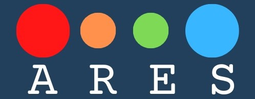

l<html lang="en">

<head>
    <meta charset="UTF-8">
    <meta name="viewport" content="width=device-width, initial-scale=1.0">
    <meta http-equiv="X-UA-Compatible" content="ie=edge">

    <link rel="stylesheet" href="../../CSS/bootstrap.min.css">
    <link rel="stylesheet" href="../../CSS/nav2.css">
    <link rel="stylesheet" href="../../CSS/info.css">
    <link rel="stylesheet" href="../../CSS/main.css">
    <link rel="stylesheet" href="../../CSS/forum.css">

    <script src="../../../Dynamic/JS/Libraries/jquery-3.4.1.min.js"></script>
    <script src="../../../Dynamic/JS/Libraries/bootstrap.min.js"></script>
    <script src="../../../Dynamic/info.js"></script>

    <title>Main menu</title>
</head>

<body>

    <nav class="navbar navbar-expand-lg">
        <a class="navbar-brand" href="#"></a>

        <div class="ml-auto collapse navbar-collapse">
            <div id="search_bar">
                <form class="form-inline">
                <input id="search_form" class="form-control mr-sm-2 ml-auto">
                <button class="btn my-2 my-sm-0" type="submit"></button>
                </form>
            </div>
        </div>
        <div  class="">
            
        </div>

      </nav>

      
      <div class="bod">
          <div class="row">
        </div>
            <h1 class="TitleInfo" style="margin-left:5%; margin-top: 7%; margin-right: 5%; text-align: center;">Unfortunately, so far there are no effective methods to avoid these situations. Imagine that you are exploring Mars with a rover, which tools do you think are essential for your survival in such adverse conditions?</h1>
        <br>

        <div class="row text">
          <form class="text">
          <input style="width:100%;" type="text" class="form-control inputans">
          </form>
        </div>

        <div class="row" >
          <div class="col text-center clearbox">
            <div class="gob buttonans">SEND</div>
          </div>
          <div class="col text-center clearbox">
            <button class="gob" style="background-color:#7ed957;" onclick="location.href='../forum.html';">FORUM</button>
          </div>
        </div>

        <div class="row">
            <h2 class="col text-center anstit">ANSWERS</h2>
        </div>

        <div class="anscontainer">
            <div class="row">
                <div class="col ansblock text-center">This is an answer.</div>
            </div>

        </div>
        

       </div>
       <script src="../../../Dynamic/JS/forum.js"></script>
       <script>
        var answers =["I think we could change the solar energy source to a wind source one since if the storms are generated with a large amount of air, the rovers could survive and use their heating to avoid freezing.","Yes, I agree with you, we could use that, with a filter that prevents the passage of sand to the circuits.","I don't think that is feasible, because the entry of sand is likely and that would affect the circuits, and the same would happen. In addition to the fact that energy is usually obtained from, they are very large devices. I propose electrical energy.","And we return to the same point, where will they get electrical energy?"];
        refresh();
      </script>


</body>

</html>
